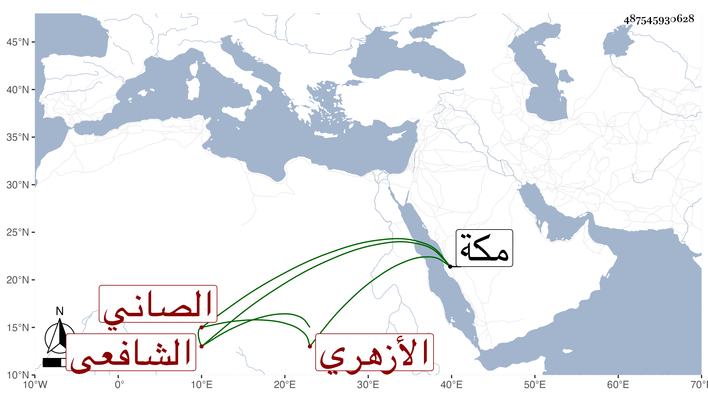

0902Sakhawi.DawLamic.ITO20230111-ara1.EIS1600.487545930628
Biography ID: 487545930628
701
عبد القادر بن حسن بن عبيد بن محمد الجمال الصاني الأزهري الشافعي ويدعى عبيدا ويعرف في بلده كسلفه بابن عقيل وكانت أمه تذكر له أنها نسبة لعقيل بن أبي طالب ، وبالقاهرة بعبيد الصاني . حفظ القرآن والمنهاج ولازم الشيخ محمد الطنبداوي الضرير والزيني زكريا وتميز بهما وأشير إليه بالفضيلة وكذا حضر عند الولوي الاسيوطي بل مر مع الشهاب الابشيهي على كتب كثيرة وقبل ذلك أخذ عن البدر حسن الأعرج ، وحج غير مرة وأقرأ ولد قاسم بن بيبرس بن بقر سبط ابن البرقي لكون أبيه أقرأ أباه وسافر مع الجمال الظاهري لمكة في الصر وغيره وكان يستصحب معه ما يتجر فيه ذهابا وإيابا فلما استقر الزيني في القضاء عمله أمين الحكم بل صار إليه الحل والربط وعليه المعول والضبط وامتحن بالترسيم مدة طويلة ولكن افتك نفسه بما وزعه على جهات الطلبة والفقهاء والأوقاف حسبما بسطته في محل آخر ولما مات أبو اليمن بن البرقي استقر به يشبك في التكلم في جهاته وهو في الفضيلة والقدرة على التخلص الظاهر بمكان ووصل لما لم يصل إليه من قبله لموت كل من ابن يعقوب وابن عبد العزيز وأبي السعادات البلقيني في أيام عزه فحاز العلم بأشياء كانت مكتوبة وتزايد كتمها .
